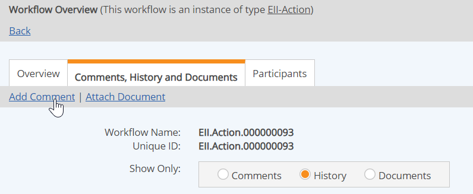

You may add comments to any workflow, whether open or closed. In order to add comments to a workflow, you must have the permission, granted through any role you are a member of in the workflow.
If you are assigned to a workflow step, you may enter comments in the Comments box on the step completion form for a step. The Comments box will appear at the bottom of the step completion form, if you have permission.
Sometimes a step form may be configured with its own Comments custom field. This is a separate field from the native Comments field which is available to all workflows.
If you are not assigned to a workflow step and do not have permission to edit a step, you may add comments from Workflow Overview, in the Comments, History and Documents tab.
To add comments to a workflow to which you are assigned:
Add your comments to the Comments box, then save.
Click Save and Exit to save your comments without changing the workflow progress. To complete the step and move the workflow on to the next step or close the workflow, use one of the Save and... options.
To add comments to a workflow from the Workflow Overview:
Do one of the following:
The history of the workflow and all comments are shown. Select the Comments button to filter for Comments only.
Click the Add Comment link at the top of the page.

Permission to view and add comments are granted through any workflow role you are a member of in the workflow, or through the Manage Workflows right. If you do not have the permission to either View Comments, View History or View Documents, the Comments, History and Documents tab will not be visible.